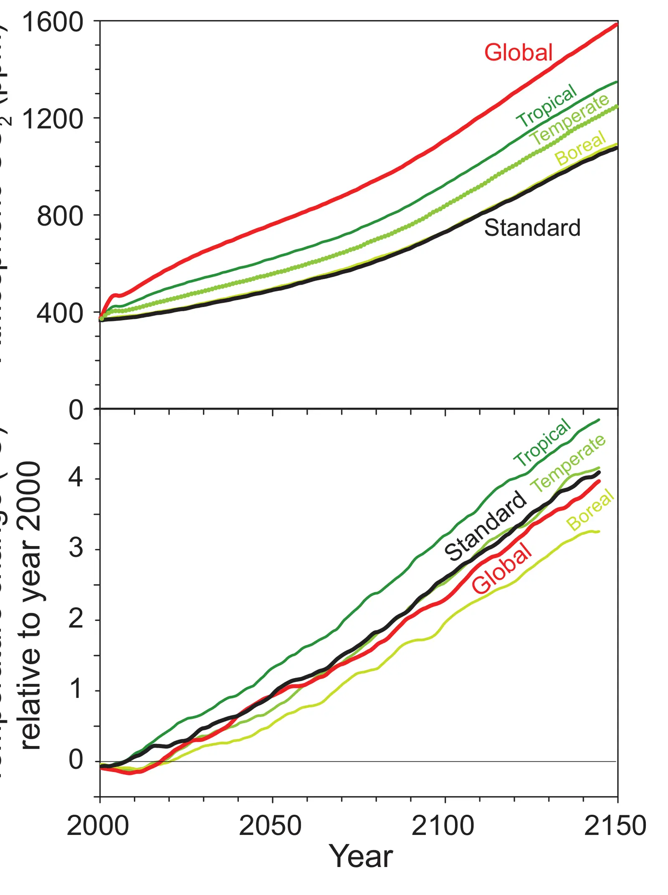

Combined climate and carbon-cycle effects of large-scale deforestation
Key finding. In coupled three-dimensional climate and carbon-cycle simulations, global-scale deforestation has a net cooling influence on climate, because the warming from released CO2 is outweighed by cooling from increased surface albedo and changed evapotranspiration; the sign of the effect depends on latitude, with tropical afforestation cooling and high-latitude afforestation warming.

What question did this research address?
Preventing deforestation and planting forests are routinely proposed as ways to slow global warming, on the reasoning that forests store carbon that would otherwise be CO2 in the atmosphere.
But forests also change the physical surface. They are darker than the land they replace, so they absorb more sunlight, and they move water to the atmosphere through evapotranspiration. This paper asked what happens when the carbon-cycle and the physical effects are simulated together rather than separately.
What did we find?
The simulations used a fully three-dimensional model representing physical and biogeochemical interactions among land, atmosphere, and ocean together, rather than treating the carbon and the surface-physics effects in isolation.
Globally, deforestation cooled the modelled climate. The warming carbon-cycle effect was overwhelmed by the net cooling from higher surface albedo and altered evapotranspiration.
Latitude-specific experiments show the global average conceals opposing regional effects. Afforestation in the tropics clearly mitigates global warming; at high latitudes it is counterproductive, and in temperate regions the benefit is marginal.
The high-latitude result follows from snow. A forest canopy masks snow that would otherwise reflect sunlight back to space, so adding trees there darkens the surface in exactly the season when albedo matters most.
Why does it matter?
The result complicates a policy instrument that is often treated as unambiguously beneficial. Counting only the carbon in a forest gets the sign of the climate effect wrong outside the tropics.
It also illustrates a general point about climate intervention: an action that is clearly right in one place can be clearly wrong in another, and a global average can hide that entirely.
None of this makes forests less valuable. They remain environmentally important for reasons unconnected to climate — the finding is about what afforestation can be expected to accomplish for global temperature, not about whether forests are worth having.
Citation, data, and code
Govindasamy Bala, Ken Caldeira, Michael Wickett, Thomas J. Phillips, David B. Lobell, Christine Delire, and Art Mirin (2007). Combined climate and carbon-cycle effects of large-scale deforestation. Proceedings of the National Academy of Sciences 104, 6550-6555.